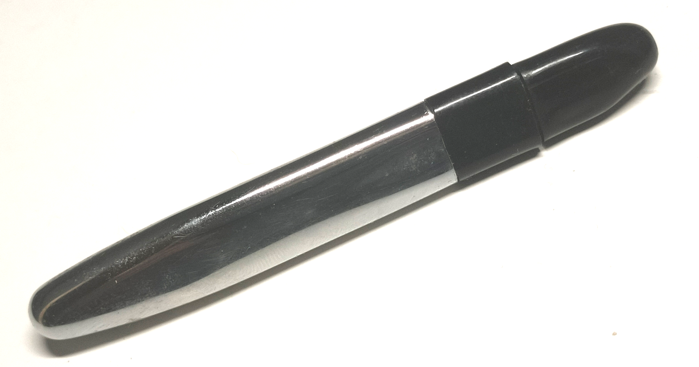
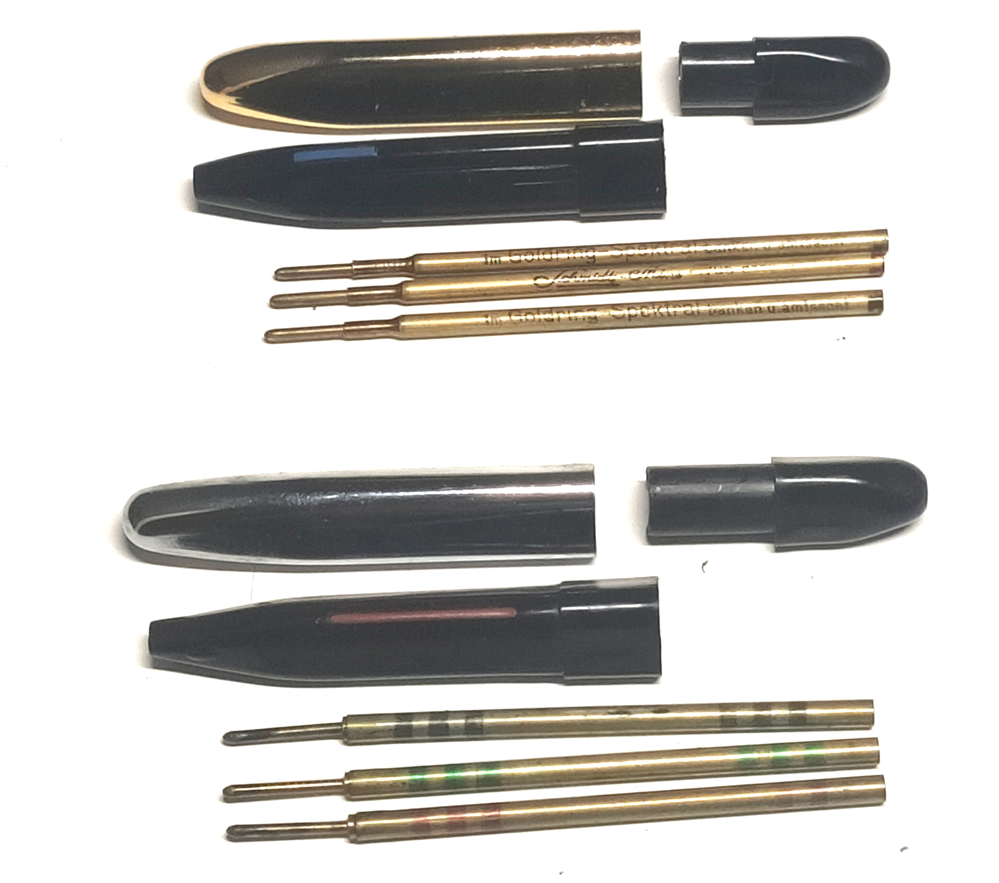
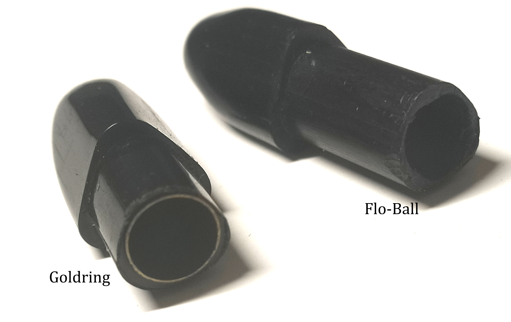
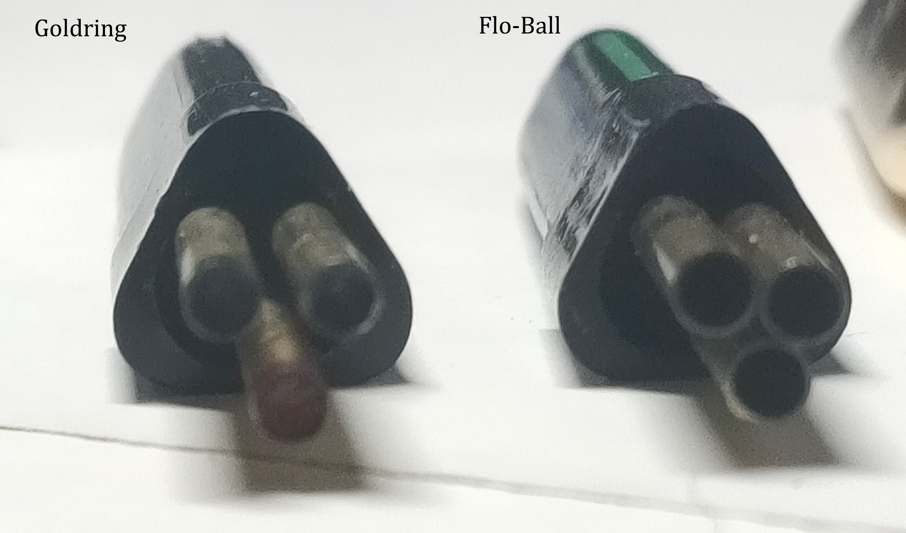
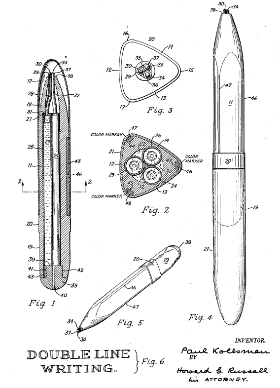

Flo-Ball
USA
Stand: 24.05.2026
Flo-Ball war ein um 1950 tätiger US-amerikanischer Schreibgerätehersteller aus New York.
Es wurden Kugelschreiber und Füllfederhalter hergestellt. Sie warb mit ihren niedrigen Preisen. Nicht viel ist über die Firma bekannt.
"Flo-Ball Tri-Tone" Dreifarb-Kugelschreiber
Der "Flo-Ball Tri-Tone" ist ein Kugelschreiber mit drei gleichzeitig hervorzeigenden Kugelschreiberminen, die in einem gleichwinkligem Dreieck angeordnet sind.Zuvor war eine solche Konstellation nur bei mehrfarbigen Füllfederhaltern möglich gewesen, da diese sich wie Kugelschreiberminen natürlich nicht durchs Schreiben verkürzen.
Zu recht wurde er beworben mit 'Never before a pen like this!'.
Der Tri-Tone wurde Anfang der 1950er Jahre in den USA verkauft und stellt die vermutliche Vorgänger-Version des Goldring Spektral aus Deutschland dar.
Ob der Stift gleichzeitig in den USA und DE hergestellt oder von einem zum anderen Land exportiert wurde, ist unklar.


Der Anwendungszweck war das mehrlinige Schreiben (z.B. für Unterstreichungen oder zur Dekoration) und allgemeiner das schnelle und mühelose Farbwechseln durch einfaches Rollen des Kugelschreibers in der Schreibhand.
Wie auch der Spektral war er in verchromter und gold-farbener Kappe zu kaufen (ich habe nur die verchromte).
Im Unterschied zum Goldring Spektral besaß er:
- eine ins Kunststoff geprägte Schrift (siehe oben)
- ein längeres Hinterstück
- keine verschleißmindernde Messinghülse im Hinterstück
- leicht andere, ebenfalls 8cm lange Minen
- lange Farb-Indikatorstriche
- die Minen federn nach hinten nicht mehr auseinander (unklar ob nur Verschleiß)



Das zugrundeliegende Patent zum Flo-Ball Tri-Tone war US2608953 von Paul Kollsman, angemeldet 12.4.1949.


Inspiration für den Tri-Tone (und damit auch den Spektral) war US2449939, ebenfalls von 1949.
Spätere Stifte dieser Art waren z.B.:
1960: FR1251499
1976: DE2643599
1978: DE7721558
Wie anfangs erwähnt hatten vor Kugelschreibern aufgrund der Natur der Sache nur Füllfederhalter eine solche Schreibspitzen-Anordnung.
Ein paar habe ich in meinem Artikel zu mehrfarbigen Füllfederhaltern aufgelistet: In der Tabelle bei Federanzahl '> 1' und Mechanismus 'keiner'.
Wenn Sie meine Recherchearbeit unterstützen wollen, würde ich mich über eine Nachricht per E-Mail freuen: wechselstift@gmail.com.